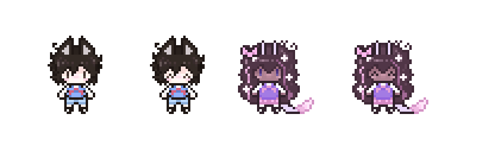
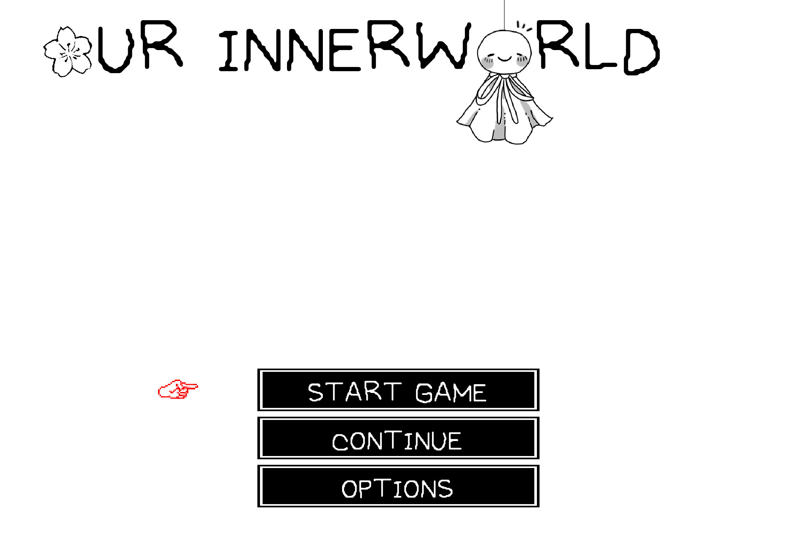

General Update
Haii!! So, it's been a long time since I last published something on my blogs. Sometimes I find myself having a hard time doing this for no apparent reason, or maybe I don't understand it enough yet. Anyway, that's why it took me so much time to make the update 2.3, considering that I also have difficulty concentrating or just staying still in my room and getting to work on this. I made a long reflection about myself working on this site and other projects like OurInnerWorld, which I know you may not know what that is, but we'll get to that point later. I don't even know how to start this, but hey, yeah, I'm back, maybe not for much time, since I also got an important job and must focus on that for the next weeks until I get used to it.
Making everything short, I moved outside of the US. Now I live in my own house, going to continue my studies, and I also got a job as an independent person with responsibilities lol. With the help of my family, of course, I'm able to live independently for now, while I'm stabilizing here as an adult. I never thought before that in my 20s I would be doing this, you know? That's why I disappear sometimes, cause I feel sometimes that I can't manage everything in my current life. So many things to do, and I feel overwhelmed... But yeah.
I still love to code, design, and create things when I have the energy and time. And I think that's the only thing that matters, besides my wellness, ofc! Going to college and having a full-time job as an English teacher for children in an academy can be hard sometimes, not because "I hate children" or something like that, but because I'm under the pressure of the principal and the parents to give the best education to their kids or students. Which is fair! And also, my own pressure, since I really care about those children, and I want them to have a good experience in the classroom with me and their environment.
I don't want to fail, I know it's okay to do so (that's something I would say to my students), but in my case, I just can't handle the idea of failing my purpose on these kids. Yeah, they are not my children, I am not their mom, but as a teacher, I think that some of you guys can understand when I say that when you spend time with those kids, you may feel a special connection to watching them grow and learn. You know what I mean? Kids who are loved at home come to school to learn, and kids who aren't come to school to be loved after all. I also think that my own person grew from these experiences.
Anyway, I don't want to make this intro too long, so I'll just say that I'm happy to be back here, and I hope you like the new update 2.3. I also want to say that I will try to be more active on my socials and blogs, but I can't promise anything, since I don't know how my life will be in the next months. But I'll try my best! And also, I want to thank you for being here and supporting me in this journey. It means a lot to me. Thank you!!
My daily life now revolves around balancing my job, studies, and personal projects. I try to allocate time for each aspect, but it can be challenging. I often find myself working late into the night to meet deadlines or, at times, sacrificing sleep to get everything done. It's a constant juggling act, but I'm learning to manage my time better and prioritize my tasks. As I said before, I moved outside of the US, and this change has brought new challenges for my life as you can expect. I live now in a quite place, a residential area with my cozy house that is different from what I'm used to. It's been an adjustment, but I'm getting there. I'm somewhat limited in terms of resources and stuff, but I'm making it work.
Sooo, yes, some may notice my devlog on my tumblr about the game I am making as an indie developer. It's a passion project that I've been working on in my spare time, and I'm excited to share more about it with you all soon! Nothing that serious, but it's something I care about and want to see through as a gift for my friends and boyfriend.
I'm working on the development of this game with the game engine of Godot for a few months before making this blog. I started a long time ago, and to be honest, I am somewhat afraid that I may not be able to finish it, not because of time, but just because of my abilities. Like, what if I'm not doing enough? Lol. I really want to make this, so I worry too much about it. This project is special for me. So I hope I will show more advances from this game in the next months. ^^
For the moment, I just have some sprites of a few characters and cute scenes! I can't show the scenes, but there's a little of the sprites and the main menu screen:


That's all for now! I hope you enjoyed this update and the little sneak peek into my life and projects. Stay tuned for more updates, and thank you for being part of this journey with me. Until next time!

 Home
Home About
About Social
Social Support
Support Tos
Tos Tools
Tools Blog
Blog  Resources
Resources Software
Software Credits
Credits Workstation
Workstation Sitemap
Sitemap